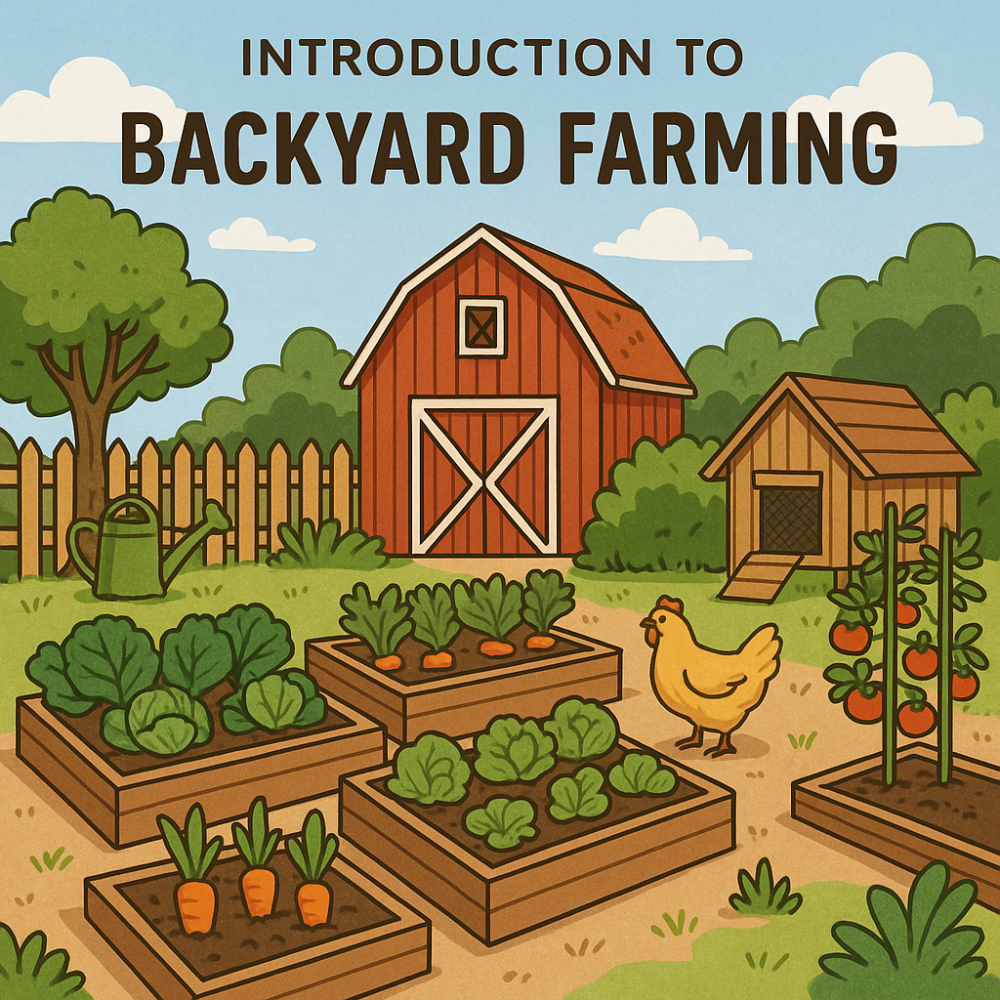
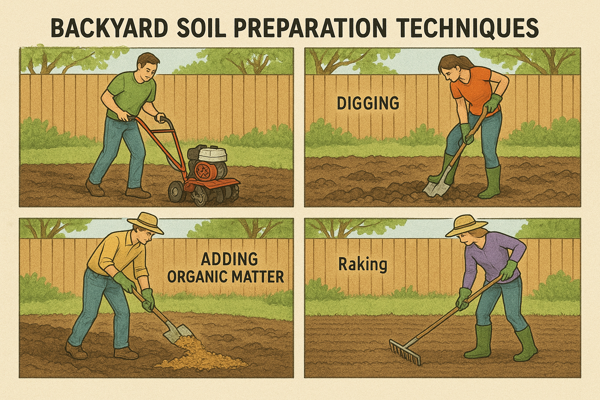
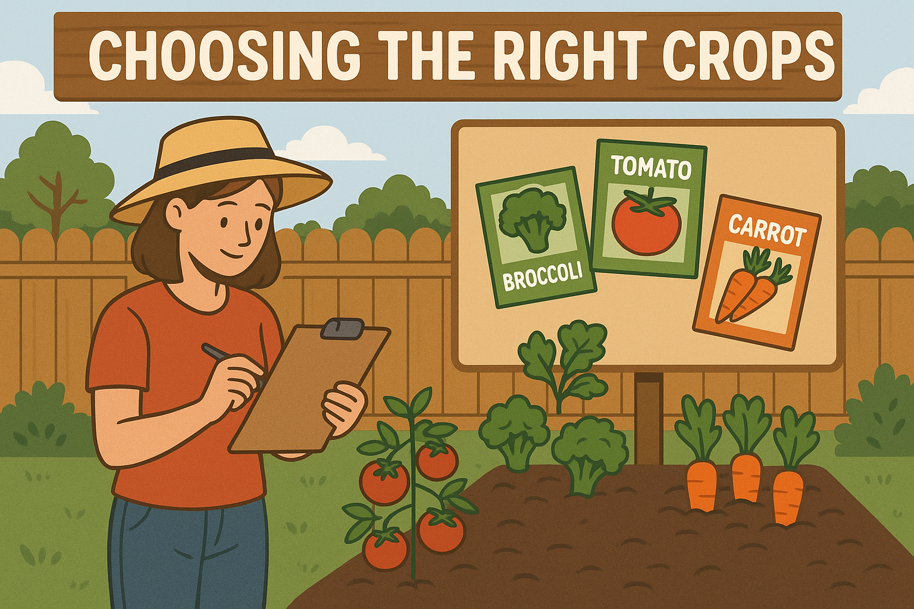
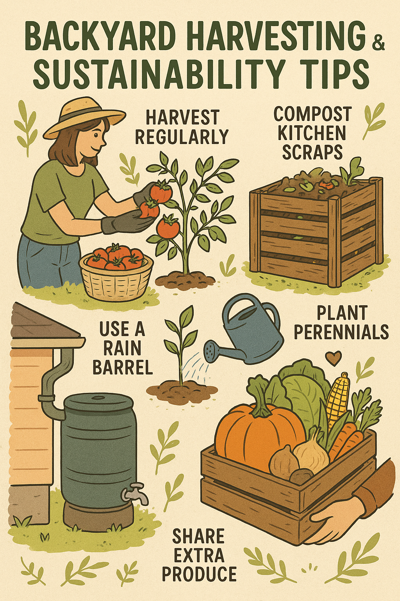
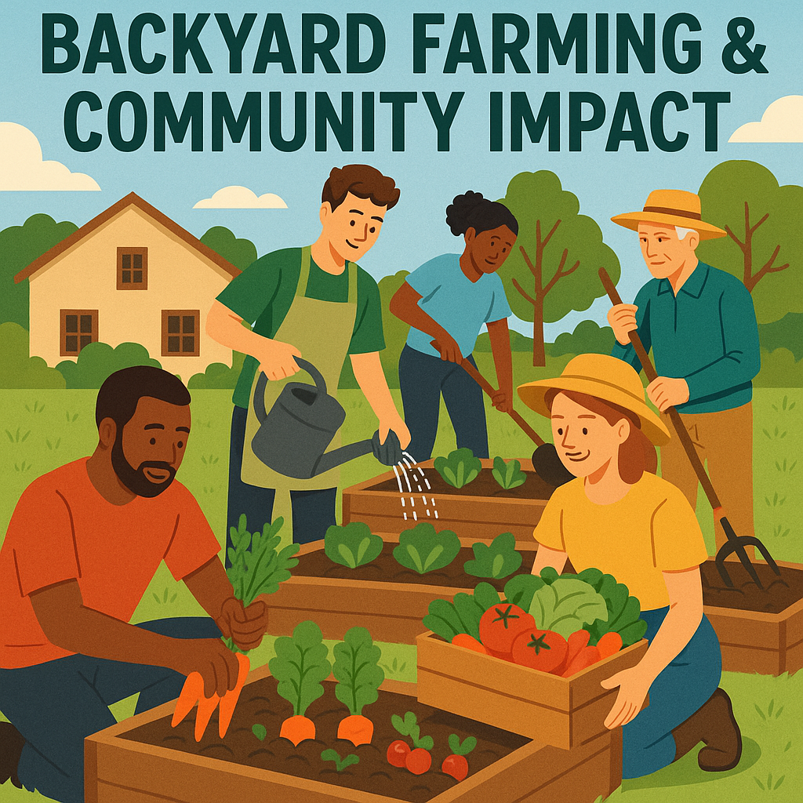

Backyard Farming for Zero Hunger
Introduction to Backyard Farming
Backyard farming is more than just a hobby it’s a powerful solution to combat food insecurity, especially in urban and rural low income communities. With increasing food prices and limited access to fresh produce, transforming unused backyard space into small farms offers both economic and nutritional benefits. Families can grow vegetables, fruits, herbs, and even raise small animals like chickens or rabbits. This self reliance reduces dependence on store-bought goods and strengthens local food resilience.
Supporting the UN’s Zero Hunger goal, backyard farming fosters environmental awareness and teaches sustainable food practices to the next generation. It reduces carbon footprints, promotes biodiversity, and helps build a healthier, hunger free future starting right at home.
Soil Preparation Techniques
Healthy crops begin with healthy soil. Start by testing the soil’s pH and nutrient content. Most vegetables prefer slightly acidic to neutral pH (6.0–7.0). Add organic compost, decomposed leaves, or manure to boost soil fertility. Avoid synthetic fertilizers as they can harm microbes that help plants grow naturally.
Loosen compacted soil to improve root penetration and aeration. In cities or poor soil areas, raised garden beds or containers filled with a quality soil mix (compost + topsoil + coco peat) are great alternatives. Don’t forget to mulch using straw or dried grass retains moisture, suppresses weeds, and adds organic matter back to the soil.
Choosing the Right Crops
Choosing crops that match your region’s climate and space availability is crucial for a productive backyard farm. For small gardens, opt for vertical growers like tomatoes, cucumbers, and beans. Leafy greens like spinach, kale, and amaranth are quick to grow and nutrient dense. Root crops such as carrots, beets, and radishes are also excellent for small plots.
Companion planting can help improve yields naturally pairing basil with tomatoes, for example, helps deter pests and improves flavor. Avoid using chemicals and instead rely on natural pest repellents like neem oil or garlic spray. Keeping a seasonal planting calendar ensures year round harvests and keeps your garden sustainable.
Harvesting & Sustainability Tips
Knowing when and how to harvest your crops is just as important as growing them. Pick vegetables like beans, cucumbers, and zucchinis when they’re young and tender. Leafy greens can be harvested gradually, allowing the plant to continue producing. Always harvest in the early morning for the best flavor and freshness.
Sustainability in backyard farming means recycling resources. Use kitchen scraps for composting, collect rainwater for irrigation, and reuse containers for planting. Engage your family, especially children, in garden tasks it builds skills and appreciation for food production. Share extra harvests with neighbors or local food banks, promoting community wide impact and solidarity in the Zero Hunger movement.
Backyard Farming and Community Impact
When individuals take backyard farming seriously, communities benefit as a whole. Neighborhood garden clubs, school based farming projects, and community composting programs can multiply the positive effects of this simple practice. Knowledge sharing helps more families become food independent, and even small gardens can make a big impact.
Backyard farming contributes to a healthier, greener planet by reducing food miles and promoting local food chains. In areas hit by poverty or malnutrition, it provides an affordable and immediate way to access vital nutrients. Empowering people to grow their own food is one of the most direct and impactful actions toward achieving the Zero Hunger goal.